지적산업기사 (2019-03-03 기출문제)
1과목: 지적측량
1. 전자면적측정기에 따른 면적측정은 도상에서 몇 회 측정하여야 하는가?
- 1회
- 2회
- 3회
- 5회
(정답률: 83%)

2. 좌표가 X=2907.36m, Y=3321.24m인 지적도근점에서 거리가 23.25m, 방위각이 179° 20′ 33″ 일 경우, 필계점의 좌표는?
- X = 2879.15m, Y = 3317.20m
- X = 2879.15m, Y = 3321.51m
- X = 2884.11m, Y = 3315.47m
- X = 2884.11m, Y = 3321.51m
(정답률: 59%)
3. 지적도근점의 각도관측 시 배각법을 따르는 경우 오차의 배분 방법으로 옳은 것은?
- 측선장에 비례하여 각 측선의 관측각에 배분한다.
- 변의 수에 비례하여 각 측선의 관측각에 배분한다.
- 측선장에 반비례하여 각 측선의 관측각에 배분한다.
- 변의 수에 반비례하여 각 측선의 관측각에 배분한다.
(정답률: 61%)
4. 지적도 축척 600분의 1인 지역의 평판측량방법에 있어서 도상에 영향을 미치지 아니하는 지상거리의 허용범위로 옳은 것은?
- 60mm 이내
- 100mm 이내
- 120mm 이내
- 240mm 이내
(정답률: 75%)
5. 평면직각 좌표상의 두 점 A(XA, YA)와 B(XB, YB)를 연결하는
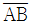
를 2등분하는 점 P의 좌표(XP, YP)를 구하는 식은?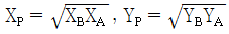
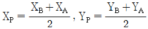
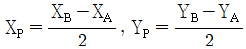
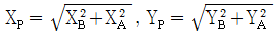
(정답률: 63%)
6. 일람도의 제도에 있어 도시개발사업 측척변경 등이 완료된 때에는 지구경게선을 제도한 후 지구 안을 어느 색으로 엷게 채색하는가?
- 남색
- 청색
- 검은색
- 붉은색
(정답률: 58%)
7. 수치지역 내의 P점과 Q점의 좌표가 아래와 같을 때 QP의 방위각은?
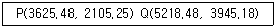
- 49° 06′ 51″
- 139° 06′ 51″
- 229° 06′ 51″
- 319° 06′ 51″
(정답률: 48%)
8. 평판측량방법으로 세부측량을 한 경우 측량결과도 기재사항으로 옳지 않은 것은?
- 측량결과도의 제명 및 번호
- 측량대상 토지의 점유현황선
- 인근 토지의 경계선⋅지번 및 지목
- 측량기하적 및 도상에서 측정한 거리
(정답률: 50%)
9. 지적측량성과와 검사 성과의 연결오차 한계에 대한 설명으로 옳지 않은 것은?
- 지적삼각점은 0.20m 이내
- 지적삼각보조점은 0.25 이내
- 경계점좌표등록부 시행지역에서의 지적도근점은 0.20m이내
- 경계점좌표등록부 시행지역에서의 경계점은 0.10m 이내
(정답률: 76%)
10. 지적측량성과의 검사방법에 대한 설명으로 틀린 것은?
- 면적측정검사는 필지별로 한다.
- 지적삼각점측량은 신설된 점을 검사한다.
- 지적도근점측량은 주요도선별로 지적도근점을 검사한다.
- 측량성과를 검사하는 때에는 측량자가 실시한 측량방법과 같은 방법으로 한다.
(정답률: 77%)
11. 좌표면적계산법에 따른 면적측정에서 산출면적은 얼마의 단위까지 계산하여야 하는가?
- 10분의 1m2
- 100분의 1m2
- 1000분의 1m2
- 10000분의 1m2
(정답률: 77%)
12. 지적측량 시행규칙상 지적삼각보조점측량의 기준으로 옳지 않은 것은? (단, 지형상 부득이한 경우는 고려하지 않는다.)
- 지적삼각보조점은 교회망 또는 교점다각망으로 구성하여야 한다.
- 광파기측량방법에 따라 교회법으로 지적삼각보조점 측량을 하는 경우 3방향의 교회에 따른다.
- 경위의측량방법과 교회법에 따른 지적삼각보조점의 수평각 관측은 3대회의 방향관측법에 따른다.
- 전파기측량방법에 따라 다각망도선법으로 지적삼각보조점측량을 하는 경우 3점 이상의 기지점을 포함한 결합다각방식에 따른다.
(정답률: 61%)
13. 지적측량이 수반되는 토지이동 사항으로 모두 올바르게 짝지어진 것은?
- 분할, 합병, 등록전환
- 등록전환, 신규등록, 분할
- 분할, 합병, 신규등록, 등록전환
- 지목변경, 등록전환, 분할, 합병
(정답률: 82%)
14. 다음 그림에서 BP의 거리를 구하는 공식으로 옳은 것은?
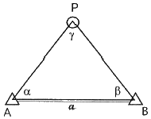
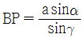
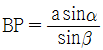
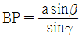
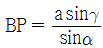
(정답률: 67%)
15. 트랜싯 조작에서 시준선이란?
- 접안렌즈의 중심선
- 눈으로 내다보는 선
- 십자선의 교점과 대물렌즈의 광심을 연결하는 선
- 접안렌즈의 중심과 대물렌즈의 광심을 연결하는 선
(정답률: 68%)
16. 5cm 늘어난 상태의 30m 줄자로 두 점의 거리를 측정한 값이 75.45m일 때, 실제거리는?(오류 신고가 접수된 문제입니다. 반드시 정답과 해설을 확인하시기 바랍니다.)
- 75.53m
- 75.58m
- 76.53m
- 76.58m
(정답률: 67%)
17. 광파측거기의 특성에 관한 설명으로 옳지 않은 것은?
- 관측장비는 측거기와 반사경으로 구성되어 있다.
- 송전선 등에 의한 주변전파의 간섭을 받지 않는다.
- 전파측거기보다 중량이 가볍고 조작이 간편하다.
- 시통이 안 되는 두 지점간의 거리측정이 가능하다.
(정답률: 59%)
18. 9개의 도선을 3개의 교점으로 연결한 복합형 다각망의 오차방정식을 편성하기 위한 최소조건식의 수는?
- 3개
- 4개
- 5개
- 6개
(정답률: 72%)
19. 평판측량방법에 따른 세부측량을 교회법으로 하는 경우 방향각의 교각 기준은?
- 45° 이상 90° 이하
- 0° 이상 180° 이하
- 30° 이상 120° 이하
- 30° 이상 150° 이하
(정답률: 70%)
20. 일람도의 제도 방법으로 옳지 않은 것은?
- 도면번호는 3mm의 크기로 한다.
- 철도용지는 검은색 0.2mm의 폭의 선으로 제도한다.
- 수도용지 중 선로는 남색 0.1mm 폭의 2선으로 제도한다.
- 건물은 검은색 0.1mm의 폭으로 제도하고 그 내부를 검은색으로 엷게 채색한다.
(정답률: 64%)
2과목: 응용측량
21. 완화곡선의 성질에 대한 설명으로 옳지 않은 것은?
- 완화곡선의 반지름은 시점에서 무한대이다.
- 완화곡선의 반지름은 종점에서 원곡선의 반지름과 같다.
- 완화곡선의 접선은 시점과 종점에서 직선에 접한다.
- 곡선반지름의 감소율은 캔트의 증가율과 같다.
(정답률: 57%)
22. 노선측량에서 그림과 같이 교점에 장애물이 있어 ∠ACD = 150°, ∠CDB = 90°를 측정하였다. 교각(I)는?
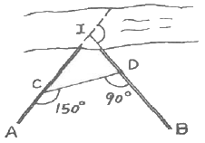
- 30°
- 90°
- 120°
- 240°
(정답률: 77%)
23. 수준측량에서 전시와 후시의 시준거리를 같게 관측할 때 완전히 소거되는 오차는?
- 지구의 곡률오차
- 시차에 의한 오차
- 수준척이 연직이 아니어서 발생되는 오차
- 수준척의 눈금이 정확하지 않기 때문에 발생되는 오차
(정답률: 53%)
24. 절대표정에 대한 설명으로 틀린 것은?
- 사진의 축척을 결정한다.
- 주점의 위치를 결정한다.
- 모델당 7개의 표정인자가 필요하다.
- 최소한 3개의 표정점이 필요하다.
(정답률: 39%)
25. 도로설계 시에 등경사 노선을 결정하려고 한다. 축척 1:5000의 지형도에서 등고선의 간격이 5m일 때 경사를 4%로 하려고 하면 등고선 간의 도상거리는?
- 25mm
- 33mm
- 45mm
- 53mm
(정답률: 49%)
26. GNSS를 이용하는 지적기준점(지적삼각점)측량에서 가장 일반적으로 사용하는 방법은?
- 정지측량
- 이동측량
- 실시간이동측량
- 도근점측량
(정답률: 71%)
27. 등고선에 직각이며 물이 흐르는 방향이 되므로 유하선이라고도 하는 지성선은?
- 분수선
- 합수선
- 경사변환선
- 최대 경사선
(정답률: 58%)
28. 우리나라 1:50000 지형도의 간곡선 간격으로 옳은 것은?
- 5m
- 10m
- 20m
- 25m
(정답률: 60%)
29. 그림과 같이 2개의 수준점 A, B를 기준으로 임의의 점 P의 표고를 측량한 결과 A점 기준 42.375m, B점 기준 42.363m를 관측하였다면 P점의 표고는?
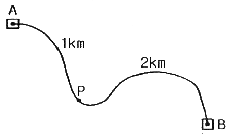
- 42.367m
- 42.369m
- 42.371m
- 42.373m
(정답률: 54%)
30. 정확한 위치에 기준국을 두고 GNSS 위성 신호를 받아 기준국 주위에서 움직이는 사용자에게 우성신호를 넘겨주어 정확한 위치를 계산하는 방법은?
- DGNSS
- DOP
- SPS
- S/A
(정답률: 63%)
31. 터널 내 측량에 대한 설명으로 옳은 것은?
- 지상측량보다 작업이 용이하다.
- 터널 내의 기준점은 터널 외의 기준점과 연결될 필요가 없다.
- 기준점은 보통 천정에 설치한다.
- 지상측량에 비하여 터널 내에서는 시통이 좋아서 측점 간의 거리를 멀리한다.
(정답률: 79%)
32. 그림과 같이 직선
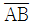
상의 점 B′에서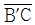
=10m인 수직선을 세워 ∠CBA=60° 가 되도록 측설하려고 할 때,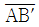
의 거리는?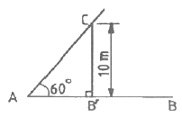
- 5.⑤m
- 5.77m
- 8.66m
- 17.3m
(정답률: 56%)
33. 항공사진측량용 카메라에 대한 설명으로 틀린 것은?
- 초광각 카메라 피사각은 60°, 보통각 카메라의 피사각은 120°이다.
- 일반 카메라보다 렌즈 왜곡이 작으며 왜곡의 보정이 가능하다.
- 일반 카메라와 비교하여 피사각이 크다.
- 일반 카메라보다 해상력과 선명도가 좋다.
(정답률: 73%)
34. 그림과 같은 ΔABC를
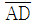
로 면적을 ΔABD:ΔABC=1:3으로 분할하려고 할 때,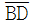
의 거리는? (단,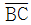
=42.6m)(오류 신고가 접수된 문제입니다. 반드시 정답과 해설을 확인하시기 바랍니다.)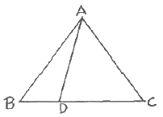
- 2.66m
- 4.73m
- 10.65m
- 14.20m
(정답률: 61%)
35. 그림과 같이 교호수준측량을 실시하여 구한 B점의 표고는? (단, HA = 20m 이다.)
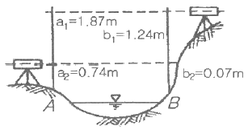
- 19.34m
- 20.65m
- 20.67m
- 20.75m
(정답률: 55%)
36. 노선측량의 단곡선 설치에서 반지름이 200m, 교각이 67° 42′ 일 때 접선길이(T.L.)와 곡선길이(C.L.)는?
- T.L.=134.14m, C.L.=234.37m
- T.L.=134.14m, C.L.=236.32m
- T.L.=136.14m, C.L.=234.37m
- T.L.=136.14m, C.L.=236.32m
(정답률: 66%)
37. 고속도로의 건설을 위한 노선측량을 하고자 한다. 각 단계별 작업이 다음과 같을 때 노선측량의 순서로 옳은 것은?
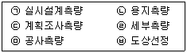
- ㉥→㉠→㉢→㉣→㉤→㉡
- ㉥→㉢→㉠→㉣→㉡→㉤
- ㉥→㉤→㉢→㉠→㉣→㉡
- ㉥→㉤→㉠→㉢→㉡→㉣
(정답률: 66%)
38. GPS의 우주부분에 대한 설명으로 옳지 않은 것은?
- 각 궤도에는 4개의 위성과 예비 위성으로 운영된다.
- 위성은 0.5항성일 주기로 지구 주위를 돌고 있다.
- 위성은 모두 6개의 궤도로 구성되어 있다.
- 위성은 고도 약 1000km의 상공에 있다.
(정답률: 62%)
39. 항공사진의 특수 3점이 아닌 것은?
- 주점
- 연직점
- 등각점
- 중심점
(정답률: 76%)
40. 항공사진측량의 특성에 대한 설명으로 옳지 않은 것은?
- 측량의 정확도가 균일하다.
- 정량적 및 정성적 해석이 가능하다.
- 축척이 크고, 면적이 작을수록 경제적이다.
- 동적인 대상물 및 접근하기 어려운 대상물의 측량이 가능하다.
(정답률: 77%)
3과목: 토지정보체계론
41. 벡터 데이터 편집 시 아래와 같은 상태가 발생하는 오류의 유형으로 옳은 것은?
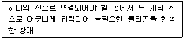
- 스파이크(Spike)
- 언더슈트(Undershoot)
- 오버래핑(Overlapping)
- 슬리버 폴리곤(Sliver polygon)
(정답률: 68%)
42. 실세계의 표현을 위한 기본적인 요소로 가장 거리가 먼 것은?
- 시간 데이터 (time data)
- 메타 데이터 (meta data)
- 공간 데이터 (spatial data)
- 속성 데이터 (attribute data)
(정답률: 63%)
43. 다음 공간 데이터의 품질과 관련된 내용 중 무결성에 대한 설명으로 옳은 것은?
- 공간 데이터의 관계간에 충실성을 나타낸다.
- 지도제작과 관련된 선택기준, 정의, 규칙 등의 정보를 제공한다.
- 유효값의 검사, 특정 위상구조 검사, 그래픽자료에 대한 일반 검사를 수행한다.
- 공간 데이터의 생성에서 현재까지의 자료기술, 처리과정, 날짜 등을 기록한다.
(정답률: 31%)
44. 우리나라의 토지대장과 임야대장의 전산화 및 전국 온라인화를 수행했던 정보화 사업은?
- 지적도면전산화
- 토지기록전산화
- 토지관리정보체계
- 토지행정정보전산화
(정답률: 46%)
45. 경계점좌표등록부의 수치 파일화 순서로 옳은 것은?
- 좌표 및 속성입력 → 좌표 및 속성검사 → 좌표와 속성결합 → 폴리곤형성
- 좌표 및 속성입력 → 좌표 및 속성검사 → 폴리곤형성 → 좌표와 속성결합
- 좌표 및 속성검사 → 좌표 및 속성입력 → 좌표와 속성결합 → 폴리곤형성
- 좌표 및 속성검사 → 좌표 및 속성입력 → 폴리곤형성 → 좌표와 속성결합
(정답률: 41%)
46. 지적도면 전산화에 따른 기대효과로 옳지 않은 것은?
- 지적도면의 효율적 관리
- 지적도면 관리업무의 자동화
- 신속하고 효율적인 대민서비스 제공
- 정부 사이버테러에 대비한 보안성 강화
(정답률: 80%)
47. 데이터베이스의 특징 중 “같은 데이터가 원칙적으로 중복되어 있지 않다.”는 내용에 해당하는 것은?
- 저장 데이터 (Stored data)
- 공용 데이터 (Shared data)
- 통합 데이터 (Integrated data)
- 운영 데이터 (Operational data)
(정답률: 65%)
48. 다음 중 필지식별자로서 가장 적합한 것은?
- 지목
- 토지의 소재지
- 필지의 고유번호
- 토지소유자의 성명
(정답률: 72%)
49. 래스터 데이터의 압축방법이 아니 것은?
- 사지수형(Quadtree)
- 블록코드(Block Code)기법
- 스틸코드(Steel Code)기법
- 체인코드(Chain Code)기법
(정답률: 62%)
50. 토지정보 전산화의 목적에 해당하지 않는 것은?
- 지적서고의 확장을 방지할 수 있다.
- 지적공부를 토지소유자와 실시간으로 공유할 수 있다.
- 지적정보의 정확성을 높이고 업무의 신속성을 확보할 수 있다.
- 체계적이고 과학적인 토지 관련 정책 자료와 지적행정을 실현할 수 있다.
(정답률: 52%)
51. KLIS에서 공시지가정보검색 및 개발부담금관리를 위한 시스템으로 옳은 것은?
- 지적공부관리시스템
- 토지민원발급시스템
- 토지행정지원시스템
- 용도지역지구관리시스템
(정답률: 50%)
52. 중첩의 유형에 해당하지 않는 것은?
- 선과 점의 중첩
- 점과 폴리곤의 중첩
- 선과 폴리곤의 중첩
- 폴리곤과 폴리곤의 중첩
(정답률: 71%)
53. 지표면을 3차원적으로 표현할 수 있는 수치표고자료의 유형은?
- DEM 또는 TIN
- JPG 또는 GIF
- SHF 또는 DBF
- RFM 또는 GUM
(정답률: 74%)
54. 토지정보시스템 구축의 목적으로 가장 거리가 먼 것은?
- 토지관련 과세 자료의 이용
- 지적민원사항의 신속한 처리
- 토지관계 정책 자료의 다목적 활용
- 전산자원 및 지적도 DB 단독 활용
(정답률: 60%)
55. 지적전산용 네트워크 기본 장비와 거리가 가장 먼 것은?
- 교환 장비
- 정송 장비
- 보안 장비
- DLT 장비
(정답률: 50%)
56. 아래와 같은 특정을 갖는 도형자료의 입력장치는?
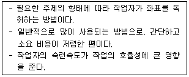
- 프린터
- 플로터
- DLT 장비
- 디지타이저
(정답률: 79%)
57. 데이터의 표준화를 위해서 선행되어야 할 요건이 아닌 것은?
- 원격탐사
- 형상의 분류
- 대상물의 표현
- 자료의 질에 대한 분류
(정답률: 62%)
58. 공간 데이터의 표현 형태 중 폴리곤에 대한 설명으로 옳지 않은 것은?
- 이차원의 면적을 갖는다.
- 점, 선, 면의 데이터 중 가장 복잡한 형태를 갖는다.
- 경계를 형성하는 연속된 선들로서 형태가 이루어진다.
- 폴리곤간의 공간적인 관계를 계량화하는 것은 매우 쉽다.
(정답률: 66%)
59. 부동산종합공부시스템의 관리내용으로 옳지 않은 것은?
- 부동산종합공부시스템의 사용시 발견된 프로그램의 문제점이나 개선사항은 국토교통부장관에게 요청해야 한다.
- 사용기관이 필요시 부동산종합공부시스템의 원시프로그램이나 조작 도구를 개발⋅설치할 수 있다.
- 국토교통부장관은 부동산종합공부시스템이 단일 버전의 프로그램으로 설치⋅운영되도록 총괄⋅조정하여 배포해야 한다.
- 국토교통부장관은 부동산종합공부시스템 프로그램의 추가⋅변경 또는 폐기 등의 변동사항이 발생한 때에는 그 세부내역을 작성⋅관리해야 한다.
(정답률: 60%)
60. 네트워크를 통하여 정보를 공유하고자 하는 온라인 활용분야에서 사용되는 공통어는?
- 메타 데이터
- 속성 데이터
- 위성 데이터
- 데이터 표준화
(정답률: 65%)
4과목: 지적학
61. 다음 중 토렌스 시스템의 기본 이론에 해당되지 않는 것은?
- 거울이론
- 보상이론
- 보험이론
- 커튼이론
(정답률: 75%)
62. 다음 중 고대 바빌로니아의 지적관련 사료가 아닌 것은?
- 미쇼(Michaux)의 돌
- 테라코타(Terra Cotta) 서판
- 누지(Nuzi)의 점토판 지도(clay tablet)
- 메나 무덤(Tomb of Menna)의 고분벽화
(정답률: 57%)
63. 다음 중 토지조사사업 당시 일필지조사와 관련이 가장 적은 것은?
- 경계조사
- 지목조사
- 지주조사
- 지형조사
(정답률: 50%)
64. 토지 분할 후의 면적 합계는 분할 전 면적과 어떻게 되도록 처리하는가?
- 1m2 까지 작아지는 것은 허용한다.
- 1m2 까지 많아지는 것은 허용한다.
- 1m2 까지는 많아지거나 적어지거나 모두 좋다.
- 분할 전 면적에 증감이 없도록 하여야 한다.
(정답률: 74%)
65. 토지에 관한 권리객체의 공시역할을 하고 있는 지적의 가장 주요한 역할이라 할 수 있는 것은?
- 필지 획정
- 지목 결정
- 면적 결정
- 소유자 등록
(정답률: 62%)
66. 진행 방향에 따른 지번 부여 방법의 분류에 해당하는 것은?
- 자유식
- 분수식
- 사행식
- 도엽단위식
(정답률: 70%)
67. 우리나라 임야조사사업 당시의 재결기관으로 옳은 것은?
- 도지사
- 임야조사위원회
- 고등토지조사위원회
- 세부측량검사위원회
(정답률: 70%)
68. 1필지에 대한 설명으로 가장 거리가 먼 것은?
- 토지의 거래 단위가 되고 있다.
- 논둑이나 밭둑으로 구획된 단위 지역이다.
- 토지에 대한 물권의 효력이 미치는 범위 이다.
- 하나의 지번이 부여되는 토지의 등록 단위이다.
(정답률: 74%)
69. 지번의 설정 이유 및 역할로 가장 거리가 먼 것은?
- 토지의 개별화
- 토지의 특정화
- 토지의 위치 확인
- 토지이용의 효율화
(정답률: 62%)
70. 지적공부에 등록하지 아니하는 것은?
- 해면
- 국유림
- 암석지
- 황무지
(정답률: 72%)
71. 지적도의 축척에 관한 설명으로 옳지 않은 것은?
- 일반적으로 축척이 크면 도면의 정밀도가 높다.
- 지도상에서의 거리와 표면상에서의 거리와의 관계를 나타내는 것이다.
- 축척의 표현 방법에는 분수식, 서술식, 그래프의식방법 등이 있다.
- 축척이 분수로 표현될 때에 분자가 같으면 분모가 큰 것이 축척이 크다.
(정답률: 66%)
72. 1910년 대한제국의 탁지부에서 근대적인 지적제도를 창설하기 위하여 전 국토에 대한 토지조사사업을 추진할 목적으로 재정⋅공포한 것은?
- 지세령
- 토지조사령
- 토지조사법
- 토지측량규칙
(정답률: 57%)
73. 지적제도에서 채택하고 있는 토지등록의 일반 원칙이 아닌 것은?
- 등록의 직권주의
- 실질적 심사주의
- 심사의 형식주의
- 적극적 등록주의
(정답률: 66%)
74. 아래 표에서 설명하는 내용의 의미로 옳은 것은?
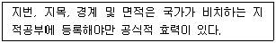
- 지적 공개주의
- 지적 국정주의
- 지적 비밀주의
- 지적 형식주의
(정답률: 58%)
75. 조선시대에 정약용이 주장한 양진개정론의 내용에 해당하지 않는 것은?
- 경무법
- 망척제
- 정전제
- 방량법과 어린도법
(정답률: 62%)
76. 적극적 토지등록제도의 기본원칙이라고 할 수 없는 것은?
- 토지등록은 국가공권력에 의해 성립된다.
- 토지등록은 형식심사에 의해 이루어진다.
- 등록내용의 유효성은 법률적으로 보장된다.
- 토지에 대한 권리는 등록에 의해서만 인정된다.
(정답률: 59%)
77. 합병한 토지의 면적 결정방법으로 옳은 것은?
- 새로이 심사법으로 측정한다.
- 새로이 전자면적기로 측정한다.
- 합병전의 각 필지의 면적을 합산한 것으로 한다.
- 합병전의 각 필지의 면적을 합산하여 나머지는 사사오입한다.
(정답률: 66%)
78. 우리나라의 지목 결정 원칙과 가장 거리가 먼 것은?
- 일필일목의 원칙
- 용도경중의 원칙
- 지형지목의 원칙
- 주지목 추종의 원칙
(정답률: 65%)
79. 각 시대별 지적제도의 연결이 옳지 않은 것은?
- 고려 - 수등이척제
- 조선 - 수등이척제
- 고구려 – 두락제(斗落制)
- 대한제국 – 지계아문(地契衙門)
(정답률: 66%)
80. 조선시대 경국대전 호전(戶典)에 의한 양전은 몇 년마다 실시하였는가?
- 5년
- 10년
- 15년
- 20년
(정답률: 66%)
5과목: 지적관계
81. 세부측량을 하는 경우 필지마다 면적을 측정하여야 하는 대상으로 옳지 않은 것은?
- 면적 또는 경계를 정정하는 경우
- 지적공부의 신규등록을 하는 경우
- 경계복원측량 및 지적현황측량에 면적측정이 수반되는 경우
- 지상건축물 등의 현황을 지적도 및 임야도에 등록된 경계와 대비하여 표시하는 데에 필요한 경우
(정답률: 47%)
82. 다음 중 지적공부에 해당하지 않는 것은?
- 지적도
- 지적약도
- 임야대장
- 경계점좌표등록부
(정답률: 69%)
83. 1필지 일부가 형질변경 등으로 용도가 변경 되어 분할을 신청하는 경우 함께 제출할 신청서로 옳은 것은?
- 신규등록 신청서
- 용도전용 신청서
- 지목변경 신청서
- 토지합병 신청서
(정답률: 62%)
84. 다음 중 지목변경없이 등록전환을 신청할 수 있는 경우가 아닌 것은?
- 산지관리법에 따라 토지의 형질이 변경되는 경우
- 도시⋅군관리계획선에 따라 토지를 분할하는 경우
- 임야도에 등록된 토지가 사실상 형질변경되었으나 지목변경을 할 수 없는 경우
- 대부분의 토지가 등록전환되어 나머지 토지를 임야도에 계속 존치하는 것이 불합리한 경우
(정답률: 41%)
85. 다른 사람에게 측량업등록증 또는 측량업등록수첩을 빌려주거나 자기의 성명 또는 상호를 사용하여 측량업무를 하게 한 자에 대한 벌칙 기준으로 옳은 것은?
- 300만원 이하의 과태료를 부과한다.
- 1년 이하의 징역 또는 1천만원 이하의 벌금에 처한다.
- 2년 이하의 징역 또는 2천만원 이하의 벌금에 처한다.
- 3년 이하의 징역 또는 3천만원 이하의 벌금에 처한다.
(정답률: 51%)
86. 일람도의 등록사항이 아닌 것은?
- 도면의 제명 및 축척
- 지번부여지역의 경계
- 지번⋅도면번호 및 결번
- 주요 지형⋅지물의 표시
(정답률: 41%)
87. 공간정보의 구축 및 관리 등에 관한 법률상 용어에 대한 설명으로 옳지 않은 것은?
- “면적”이란 지적공부에 등록한 필지의 수평면상 넓이를 말한다.
- “토지의 이동”이란 토지의 표시를 새로 정하거나 변경 또는 말소하는 것을 말한다.
- “지번부역지역”이란 지번을 부여하는 단위지역으로서 동⋅리 또는 이에 준하는 지역을 말한다.
- “축척변경”이란 지적도에 등록된 경계점의 정밀도를 높이기 위하여 큰 축척을 작은 축척으로 변경하여 등록하는 것을 말한다.
(정답률: 69%)
88. 지적측량 시행규칙상 지적도근점측량을 시행하는 경우, 지적도근점을 구성하는 도선이 아닌 것은?
- 개방도선
- 결합도선
- 왕복도선
- 폐합도선
(정답률: 71%)
89. 지적측량업자가 손해배상책임을 보장하기 위하여 가입하여야 하는 보증보험의 보증금액 기준으로 옳은 것은? (단, 보장기간은 10년 이상으로 한다.)
- 1억원 이상
- 5억원 이상
- 10억원 이상
- 20억원 이상
(정답률: 72%)
90. 공간정보의 구축 및 관리 등에 관한 법률상 지적측량을 하여야 하는 경우가 아닌 것은?
- 토지를 합병하는 경우
- 축척을 변경하는 경우
- 지적공부를 복구하는 경우
- 토지를 등록전환하는 경우
(정답률: 74%)
91. 공간정보의 구축 및 관리 등에 관한 법률상 국유재산법에 따른 총괄청이 소유자 없는 부동산에 대한 소유자 등록을 신청하는 경우의 소유자변동일자는? (단, 지적공부에 해당 토지의 소유자가 등록되지 아니한 경우)
- 등기신청일
- 등기접수일자
- 신규등록신청일
- 소유자정리결의일자
(정답률: 47%)
92. 공간정보의 구축 및 관리 등에 관한 법령상 지상경계의 결정기준 등에 관한 내용으로 옳지 않은 것은?
- 연접되는 토지 간에 높낮이 차이가 없는 경우에는 그 구조물 등의 중앙
- 도로⋅구거 등의 토지에 절토된 부분이 있는 경우에는 그 경사면의 상단부
- 토지가 해면 또는 수면에 접하는 경우에는 최대만 조위 또는 최대만수위가 되는 선
- 공유수면매립지의 토지 중 제방 등을 토지에 편입하여 등록하는 경우에는 안쪽 어깨부분
(정답률: 71%)
93. 다음 중 합병 신청을 할 수 있는 것은?
- 합병하려는 토지의 소유 형태가 공동소유인 경우
- 합병하려는 각 필지의 지반이 연속되지 아니한 경우
- 합병하려는 토지의 지적도 및 임야도의 축척이 서로 다른 경우
- 합병하려는 토지가 축척변경을 시행하고 있는 지역의 토지와 그 지역 밖의 토지인 경우
(정답률: 71%)
94. 지적소관청이 관할등기소에 토지의 표시 변경에 관한 등기를 할 필요가 있는 사유가 아닌 것은?
- 토지소유자의 신청을 받아 지적소관청이 신규등록한 경우
- 지적소관청이 지적공부의 등록사항에 잘못이 있음을 발견하여 이를 직권으로 조사⋅측량하여 정정한 경우
- 지적공부를 관리하기 위하여 필요하다고 인정되어 지적소관청이 직권으로 일정한 지역을 정하여 그 지역의 축척을 변경한 경우
- 지번부여지역의 일부가 행정구역의 개편으로 다른 지번부여지역에 속하게 되어 지적소관청이 새로 속하게 된 지번부여지역의 지번을 부여한 경우
(정답률: 45%)
95. 지적재조사측량에 따른 경계설정 기준으로 옳은 것은?
- 지적경계에 대하여 다툼이 있는 경우 현재의 지적공부상 경계
- 지상경계에 대하여 다툼이 없는 경우 등록할 때의 측량기록을 조사한 경계
- 지상경계에 대하여 다툼이 있는 경우 토지소유자가 점유하는 토지의 현실경계
- 지상경계에 대하여 다툼이 없는 경우 토지소유자가 점유하는 토지의 현실경계
(정답률: 55%)
96. 다음 중 '체육용지'로 지목 설정을 할 수 있는 것은?
- 공원
- 골프장
- 경마장
- 유선장
(정답률: 64%)
97. 토지이동과 관련하여 지적공부에 등록하는 시기로 옳은 것은?
- 신규등록 – 공유수면 매립 인가일
- 축척변경 – 축척변경 확정 공고일
- 도시개발사업 – 사업의 완료 신고일
- 지목변경 – 토지형질변경 공사 허가일
(정답률: 59%)
98. 지적업무처리규정상 측량결과에 대한 측량파일 코드의 관한 내용으로 옳은 것은?
- 분할선은 검은색 점선으로 제도한다.
- 현황선은 붉은색 점선으로 제도한다.
- 지적경계선은 파란색 실선으로 제도한다.
- 방위표정 방향선은 검은색 실선 화살표로 제도한다.
(정답률: 50%)
99. 면적측정의 방법에 관한 내용으로 옳은 것은?
- 좌표면적계산법에 따른 산출면적은 1000분의 1m2까지 계산하여 100분의 1m2단위로 정해야 한다.
- 전자면적측정기에 따른 측적면적은 100분의 1m2까지 계산하여 10분의 1m2단위로 정해야 한다.
- 경위의측량방법으로 세부측량을 한 지역의 필지별 면적측정은 경계점 좌표에 따라야 한다.
- 면적을 측정하는 경우 도곽선의 길이에 1mm 이상의 신축이 있을 때에는 이를 보정하여야 한다.
(정답률: 53%)
100. 지적재조사에 관한 특별법상 조정금의 산정에 관한 내용으로 옳지 않은 것은?(오류 신고가 접수된 문제입니다. 반드시 정답과 해설을 확인하시기 바랍니다.)
- 조정금은 경계가 확정된 시점을 기준으로 감정평가액으로 산정한다.
- 국가 또는 지방자치단체 소유의 국유지⋅공유지 행정재산의 조정금은 정수하거나 지급하지 아니한다.
- 토지소유자협의회가 요청하는 경우 시⋅군⋅구 지적재조사위원회의 심의를 거처 개별공시지가로 조정금을 산정할 수 있다.
- 지적소과청은 경계 확정으로 지적공부상의 면적이 증감된 경우에는 필지별 면적 증감내역을 기준으로 조정금을 산정하여 징수하거나 지급한다.
(정답률: 24%)